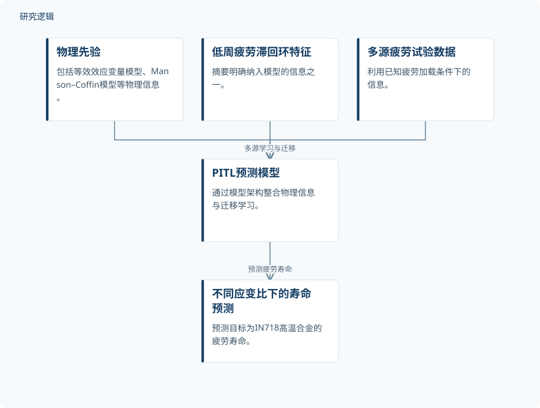

摘要解读
物理信息融合多源域迁移学习的IN718合金疲劳寿命预测
Physics‐Informed Multisource Domain Transfer Learning for Fatigue Life Prediction of IN718 Alloy
解读更新 2026-11-10 09:57 · 依据公开摘要整理，未核验全文细节
面对数据稀缺、机制复杂的IN718高温合金疲劳寿命预测，如何利用已有加载条件下的数据，预测不同应变比下的寿命？这项研究将物理先验与多源域迁移学习结合，值得关注的是物理信息如何参与预测，以及迁移效果受哪些因素影响。
文章目录
应变比变化下，已有疲劳数据如何复用
研究针对IN718高温合金在复杂条件下的疲劳寿命预测。摘要将数据稀缺与机制复杂列为主要挑战，并把利用已知疲劳加载条件的信息、预测不同应变比加载条件下的寿命作为研究目标。
这里的关键不只是建立寿命预测模型，还包括如何学习和利用多个来源的疲劳试验数据。不同来源的信息怎样组合、以何种方式迁移，构成了本文考察的问题。
将物理先验与滞回环特征纳入PITL
作者提出物理信息多源域迁移学习模型（PITL），通过模型架构整合物理先验与迁移学习算法。摘要明确提到的信息包括等效效应变量模型、Manson–Coffin模型，以及低周疲劳滞回环特征信息。
研究还在四种应变比加载条件下，系统考察不同模型组合、多源迁移模式和多源数据规模对目标域寿命预测精度的影响。摘要未展开网络结构、物理信息的具体嵌入方式或训练流程，因此不能据此补写实现细节。
依据摘要整理的PITL信息融合示意


仅展示摘要明确提及的信息来源及预测目标，不代表论文原图，也不表达具体网络结构或训练顺序。
下载 SVG图示关系说明
实线表示相邻阶段的信息流，虚线表示跨阶段联系或反馈。
物理先验 → PITL预测模型：融入物理信息；低周疲劳滞回环特征 → PITL预测模型：整合特征信息；多源疲劳试验数据 → PITL预测模型：多源学习与迁移；PITL预测模型 → 不同应变比下的寿命预测：预测疲劳寿命
物理信息带来优势，迁移配置仍影响表现
摘要报告，PITL能够利用已知疲劳加载条件的信息，对不同应变比加载条件下的疲劳寿命实现准确预测。相较于基础迁移学习模型，融入物理信息的PITL表现出更高的预测精度与鲁棒性。
预测表现同时依赖模型组合、迁移模式与源域数据量。因此，摘要支持的是物理信息融合模型的相对优势，而非任意迁移配置都同样有效；其中也没有给出可量化比较的误差指标或提升幅度。
摘要尚不足以界定验证覆盖面
当前资料未报告独立试样数量、各域数据分配、训练与测试划分，以及四种应变比的具体取值；基础迁移学习模型的配置和鲁棒性评价标准也未展开。这些属于摘要无法判断的信息，不能据此认定论文没有开展相关工作。
此外，摘要不足以判断结果是否适用于其他材料、其他加载条件或工程服役场景。本文解读仅依据完整摘要，不将所报告的疲劳寿命预测结果延伸为已经验证的在线运维能力。
阅读启发：关注物理信息与迁移条件的配合
阅读启发：后续阅读可重点追问，等效效应变量模型、Manson–Coffin模型与滞回环特征分别如何进入PITL，以及不同模型组合和迁移模式的比较如何设置。这些问题直接关系到怎样理解摘要所报告的性能优势。
对于疲劳可靠性与智能运维方向，更值得关注的是源域数据量与预测表现之间的关系，以及目标域验证覆盖了哪些条件。当前资料支持将其视为跨加载条件寿命预测的研究线索，但不足以判断实际部署价值。
以上为本站阅读启发与建议，不是论文已验证的结论。